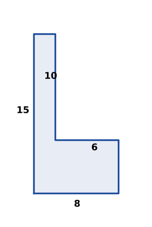

Store A sells 3 pounds of apples for $8.07. Store B sells 5 pounds for $15.55. Diego needs 24 pounds. How much does he save by buying them all at the store with the lower unit price?MULTIPLE CHOICE
(A)$10.08
(B)$24.00
(C)$5.00
(D)$15.55
Class A's scores: 25, 26, 26, 27. Class B's scores: 20, 24, 28, 32. Both have mean 26. Which statement is true?MULTIPLE CHOICE
(A)Class B's scores are more spread out.
(B)Class B has a greater mean.
(C)Class A's scores are more spread out.
(D)Both classes have the same spread.
To answer "How many hours do students in our class read each week?", Rosa collected 5 responses: 6, 2, 5, 4, 11. One more student answered 14. What is the mean of all 6 responses?MULTIPLE CHOICE
Rectangle 1 has corners (0, 0), (5, 0), (5, 5) and (0, 5). Rectangle 2 has corners (5, 0), (10, 0), (10, 5) and (5, 5). What is the total area of the two rectangles in square units?MULTIPLE CHOICE
A right triangle has legs 12 ft and 15 ft. Find its area.MULTIPLE CHOICE
(A)45 ft²
(B)90 ft²
(C)27 ft²
(D)180 ft²
Data: 10, 12, 20, 21, 21, 25, 27, 31, 33. Give the median and the interquartile range, separated by a comma.MULTIPLE CHOICE
(A)21, 23
(B)16, 29
(C)22, 13
(D)21, 13
A bamboo plant grows 216 inches in a year. How many feet is that?MULTIPLE CHOICE
(A)72 feet
(B)204 feet
(C)18 feet
(D)2592 feet
Find the area of the L-shaped figure. The outer rectangle is 8 m by 15 m, and a 6 m by 10 m corner piece is cut out.MULTIPLE CHOICE

(A)180 m²
(B)120 m²
(C)46 m²
(D)60 m²
A park on a map has corners (-7, -5), (2, -5), (2, 4) and (-7, 4). Each unit is 10 m. Fencing costs $4 per meter. How much does fencing the park cost?MULTIPLE CHOICE
(A)$4.00
(B)$1,440
(C)$360.00
(D)$36.00
A box with no top is 5 in. long, 5 in. wide and 3 in. tall. How many square inches of cardboard cover its outside?MULTIPLE CHOICE
Mix A uses 3 cups of blue paint for every 5 cups of white. Mix B has 8 cups of blue and 15 cups of white. How many cups of blue paint must be added to Mix B so it is the same shade as Mix A?MULTIPLE CHOICE
A fish tank is 15 1/2 in. long, 8 in. wide and 9 in. tall. It is filled with water to 3/4 of its height. How many cubic inches of water are in the tank?MULTIPLE CHOICE
Select ALL problems that are matched with the correct answer.SELECT ALL THAT APPLY
A club has 5 boys and 55 girls. Write the ratio of boys to girls in simplest form, as a:b. → 11:1
A club has 22 cats and 14 dogs. Write the ratio of cats to dogs in simplest form, as a:b. → 11:18
A club has 35 cats and 45 dogs. Write the ratio of cats to dogs in simplest form, as a:b. → 35:45
A club has 72 cats and 40 dogs. Write the ratio of cats to dogs in simplest form, as a:b. → 9:5
A club has 14 cats and 77 dogs. Write the ratio of cats to dogs in simplest form, as a:b. → 2:11
A club has 8 cats and 28 dogs. Write the ratio of cats to dogs in simplest form, as a:b. → 2:7
Select ALL problems that are matched with the correct answer.SELECT ALL THAT APPLY
47% of the songs on a playlist are pop songs. If there are 400 in all, how many is that? → 212
20% of the seats in a theater are filled. If there are 400 in all, how many is that? → 320
69% of the songs on a playlist are pop songs. If there are 400 in all, how many is that? → 276
46% of the students in a school ride the bus. If there are 300 in all, how many is that? → 138
59% of the seats in a theater are filled. If there are 400 in all, how many is that? → 236
64% of the seats in a theater are filled. If there are 300 in all, how many is that? → 64
Select ALL problems that are matched with the correct answer.SELECT ALL THAT APPLY
Find the area of a triangle with base 7 cm and height 15 cm. → 52.5 cm²
Find the area of a triangle with base 9 cm and height 14 cm. → 31.5 cm²
Find the area of a triangle with base 10 cm and height 5 cm. → 50 cm²
Find the area of a triangle with base 13 cm and height 10 cm. → 65 cm²
Find the area of a triangle with base 7 cm and height 17 cm. → 24 cm²
Find the area of a triangle with base 3 cm and height 5 cm. → 7.5 cm²
On a map, 1 cm represents 5 km. A road goes 8 cm from Ashby to Bell and then 7 cm from Bell to Carver. A bus averages 40 km per hour. How many hours does the trip from Ashby to Carver take?SHORT ANSWER
Answer:
Dev answered this problem incorrectly.
Data: 14, 32, 38, 40, 50, 60, 60. Find the lower quartile (Q1).
Dev's answer: 40
Identify the mistake and give the correct answer.SHORT ANSWER
Answer:
Data: 16, 4, 27, 8, 27, 5, 18, 7, 11, 14. A histogram uses the interval 1–10. What percent of the data values are in that interval?SHORT ANSWER
Answer:
A garden is a trapezoid with parallel sides 13 ft and 26 ft and height 9 ft. One bag of seed covers 60 square feet. How many bags are needed?SHORT ANSWER
Answer:
Paint mixture. A paint color uses 3 cups of blue paint for every 5 cups of white paint.CONSTRUCTED RESPONSE · 4 POINTS
(a) What is the ratio of blue paint to the total amount of paint?
(b) How many cups of white paint are needed with 12 cups of blue paint?
(c) What percent of the mixture is blue paint?
(d) Ana wants 40 cups of the mixture in all. How many cups of blue paint does she need?
 (A)x < 6(B)x ≤ 6(C)x ≥ 6(D)x > 6
(A)x < 6(B)x ≤ 6(C)x ≥ 6(D)x > 6